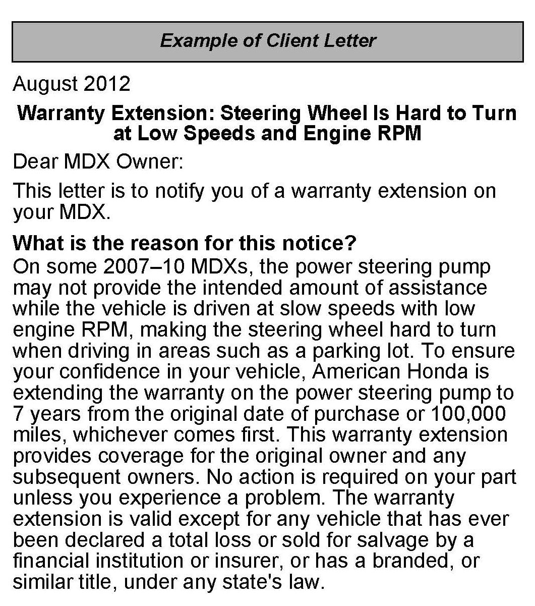
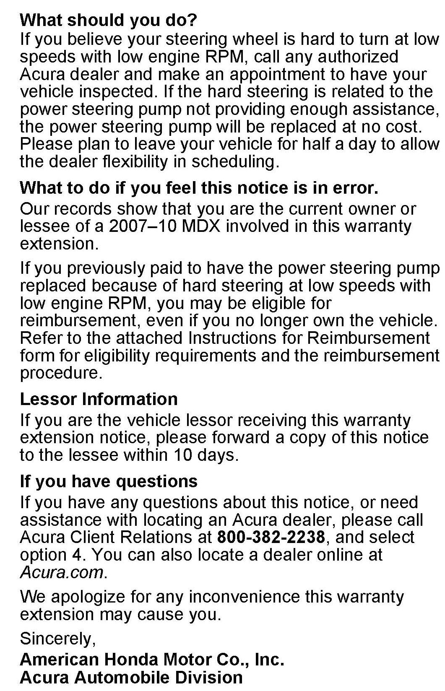
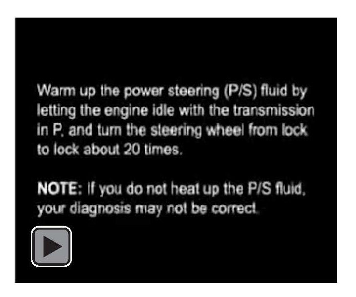
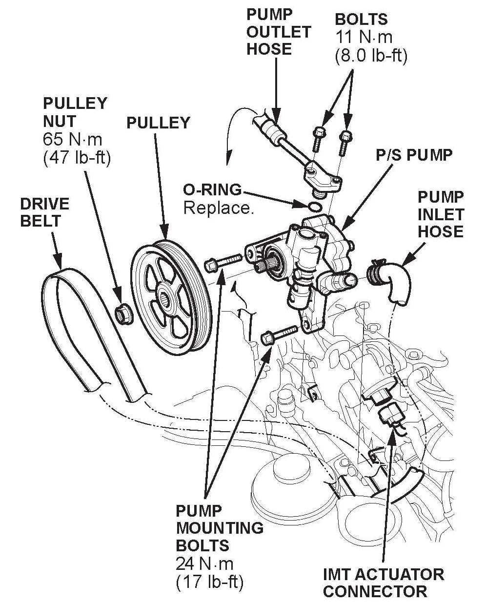
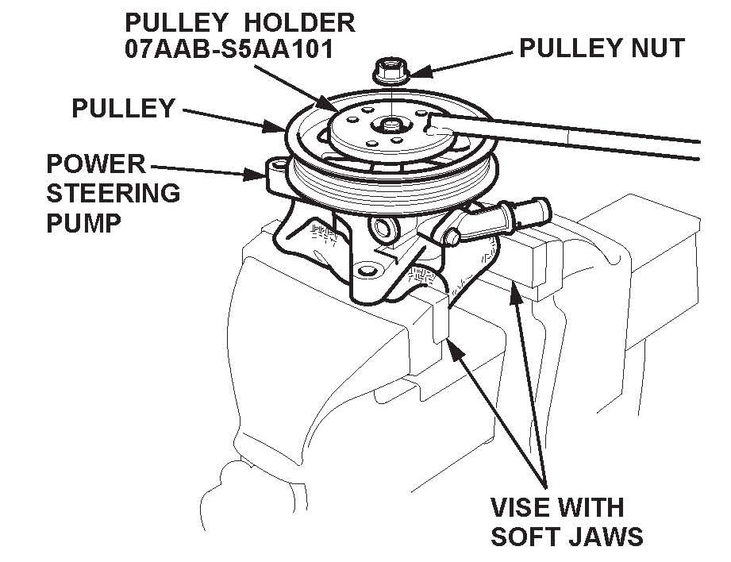

Campaign - Power Steering Pump Warranty Extension
12-017August 3, 2012
Applies To:
2007-10 MDX - Check the iN VIN status for eligibility
Warranty Extension: Steering Wheel Is Hard to Turn at Low Speeds
BACKGROUND
On some 2007-10 MDXs, the power steering pump
does not provide the intended amount of assistance
while the vehicle is driven at slow speeds with low
engine RPM, making the steering wheel hard to turn
when driving in areas such as a parking lot. To
increase client confidence, American Honda is
extending the warranty on the power steering pump in
affected vehicles to 7 years from the original date of
purchase or 100,000 miles, whichever comes first.
The warranty extension does not apply to any vehicle
that has ever been declared a total loss or sold for
salvage by a financial institution or insurer, or has a
branded or similar title under any states law.
CLIENT NOTIFICATION


Owners of affected vehicles will receive a notification of this warranty extension. An example of the client notification is included at the end of this service bulletin.
Before doing work on a vehicle, verify its eligibility by doing an iN VIN status inquiry.
CORRECTIVE ACTION
Do the diagnosis and, if needed, replace the power steering pump.
PARTS INFORMATION
Power Steering Pump Kit: P/N 06561-RYE-305 (Includes a power steering pump outlet hose O-ring and a power steering pump without the pulley or nut.)
REQUIRED MATERIALS
Acura Power Steering Fluid: P/N 08206-9002A
(One bottle repairs one vehicle)
REQUIRED SPECIAL TOOLS
Pulley Holder: T/N 07AAB-S5AA101
WARRANTY CLAIM INFORMATION
Operation Number: 5121G4
Flat Rate Time: 0.3 hour
Failed Part: P/N 56110-RYE-A03
Defect Code: 5P500
Symptom Code: R8200
Template ID: 12-017A
Skill Level: Repair Technician
DIAGNOSIS
1. Make sure the tires are properly inflated. See the drivers doorjamb label for more information.
2. With the vehicle on the ground, start the engine, and warm it up to normal operating temperature (the radiator fan comes on).
3. Warm up the power steering (P/S) fluid by letting the engine idle with the transmission in P, and turn the steering wheel from lock to lock about 20 times. NOTE: If you do not heat up the P/S fluid, your
diagnosis may not be correct.

4. After the P/S fluid is warmed up, turn the steering wheel from lock to lock, and note the steering wheel effort.
5. Continue turning the wheel from lock to lock, and raise the engine RPM to between 1,500 and 2,000. Note the steering wheel effort and compare it with the steering effort when the engine is idling.
^ If the steering wheel is easier to turn at high RPM, go to REPAIR PROCEDURE.
^ If the steering wheel effort at idle and high RPM is about the same, this bulletin does not apply.
Compare your results against a known-good vehicle and continue with normal troubleshooting.
REPAIR PROCEDURE
NOTE:
^ Do not drain the P/S fluid to replace the pump because the issue with the pump does not affect the fluid.
^ Take care not to spill any P/S fluid on the vehicle body or other parts. Wipe off any spilled fluid immediately.
1. Remove the engine cover.

2. Disconnect the IMT actuator connector (if applicable).
3. Remove the drive belt from the P/S pump pulley.
Make sure no P/S fluid gets on the belt.
4. Cover the auto-tensioner, the alternator, and the A/C compressor with shop towels to protect them from any spilled P/S fluid.
5. Disconnect the inlet and outlet hoses from the P/S pump, and plug the open ends.
6. Remove the pump mounting bolts and the pump.

7. Hold the pump in a vise with soft jaws, then remove the pulley nut and pulley using the pulley holder. Be careful not to damage the pump housing with the jaws of the vise.
8. Install the pulley and the pulley nut on the new P/S pump. Torque the nut to 64 N.m (47 lb-ft).
9. Install the pump to its bracket with the mounting bolts, then torque the bolts to 24 N.m (17 lb-ft).
10. Connect the inlet hose to the pump.
11. Place a new O-ring on the outlet hose, then connect the outlet hose to the pump, and torque its bolts to 11 N.m (8 lb-ft).
12. Reinstall the drive belt.
13. Reconnect the IMT connector.
14. Reinstall the engine cover.
15. Make sure the P/S reservoir is filled to the upper line.
16. Bleed the air from the P/S system:
^ Start the engine, and with the vehicle in P, raise the engine speed to 2,000 RPM.
^ Turn the steering wheel to the left until it stops.
Hold it against the stop for 20 seconds.
^ Turn the steering wheel to the right until it stops.
Hold it against the stop for 20 seconds.
NOTE:
If the pump is making a buzzing noise like in the sound file below,the pump is OK. There is still air trapped in the system. Repeat the air bleeding procedure.
17. Recheck the reservoir to make sure it is filled to the upper line, and inspect for leaks.
18. Return the original pump for remanufacturing.
Refer to Parts Information Bulletin B08-0009,
Remanufactured Steering Pump Program, for
packing and return instructions. To avoid a core
charge, return the pump as instructed.

Disclaimer